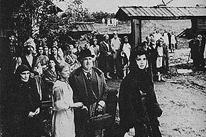
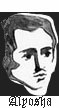

Page index / courses
part3.shtml

PART THREE
- * BOOK SEVEN - Alyosha
- I.-II. The odor of corruption/A critical moment
- Summary
- Analysis
- III.-IV. An onion/Cana of Galilee
- Summary
- Analysis
- Summary
- * BOOK EIGHT - Mitya
- Summary
- Analysis
- * BOOK NINE - The Preliminary Investigation
- Summary
- Analysis
BOOK SEVEN - Alyosha

I.-II. The odor of corruption/A critical moment.
Summary
As soon as Father Zossima´s body was prepared for burial, everyone flocks to his cell in hope of witness a miracle. Instead, the elder´s body begins to immediately putrefy and the odor of corruption soon sickens all of the mourners. Though Father Païssy continued to read the bible, rumors started to spread that "God´s judgment is not as man´s." Though the elder was believed to be on the verge of sainthood, many speculated that this could been an evil omen. Many suggest possible collusion with Satan. In fact, the fanatical ascetic, Father Ferapont attempts an exorcism and points to the elder system as the madness in the monastery. Alyosha wonders why God would have disgraced such a man. His love for Zosima was so great that he could not understand how the Lord could have shamed his disciple. When Alyosha encounters Rakitin, he suddenly accepts the offers of sausage and vodka. In fact, he agrees, much to Rakitin´s amazement, to head to Grushenka´s lodgings. Analysis
Alyosha had been preparing for this event throughout his rearing, but it appears he was not ready. It appears that he was expecting a miracle to occur like all of the others. Belief, without divine intervention, parallels Ivan´s Grand Inquisitor tale. Alyosha, unlike his brother, Ivan, does not question God's existence. Instead, he questions His justice. "I am not rebelling against my God; I simply don´t accept His world." III.-IV. An onion/Cana of Galilee
Summary
Grushenka is surprised to see Rakitin and Alyosha. She says she has been awaiting a message from a Polish ex-lover who may be sending for her. Grushenka approaches Alyosha and sits on his knee. When she discovers why Alyosha is so down, her mood quickly changes. She denounces her life of sin. Alyosha listens as Grushenka recounts a story of an sinner whose only act of kindness, the gift of an onion to a beggar, resulted in her eternal damnation when she refuses to allow other sinners to use it to climb up to heaven. Afterwards, a message arrives from her lover, and she leaves. She tells Alyosha to tell Dmitri that she loved him "only one short hour." Alyosha returns to the monastery and goes to the elder´s cell. While Father Païssy reads the wedding of Galilee, Alyosha dreams that he and Father Zosima are at the wedding, too. Zosima tells Alyosha to rejoice and enjoy life. It is time to "sojourn in the world." Analysis
Through this peculiar encounter with Grushenka, Alyosha has a transformation. His "loving heart" will not be left in a monastery, for "he who loves men loves their happiness." This interaction with Grushenka shows the value of what Zosima has preached: Christ came to give people pleasure in the world and to preach love and joy. This more than anything is grounds for believing.
BOOK EIGHT - Mitya

Summary
Dmitri hopes that Grushenka would accept him as her husband. His still has to resolve, however, the financial and moral debt he owes to Katerina. He tries several ploys to attain the 3,000 roubles. First of all, he offers his claim to some of Fyodor´s property to Grushenka´s protector, Samsonov. After he gets sent on a wild goose chase to some peasant merchant and is told to head to the "gold mines" by Madame Khokhlakov, he finds himself searching for Grushenka, herself. Not encountering her at home, he heads to his father´s. Dmitri does not find her with his father, though he does find trouble. While trying to flee, he is forced to knocks out Grigory with a pestle. When he returns to Grushenka's house, he discovers the real reason she is gone. Recovering his pistols from his friend Perhotin, he goes to a nearby store and buys hundreds of roubles of food and wine. He must see Grushenka one more time at Mokroe. He finds her with the Poles. After Dmitri displays what a despicable character Vrublevsky really is, Grushenka turns to Dmitri. They fall asleep together only to be awoken by the police captain, Mikhail Makarovich. He is being charged with the theft of 3,000 roubles and his father´s murder! Analysis
The plot thickens as thought moves to action. Throughout this entire passage, the first-time reader is convinced of Dmitri's culpability. It appears that he has few qualms with doing what is necessary to acquire the money. Of course, the resolution to commit suicide after his final night with Grushenka, assures the reader of his desperation. In this desperation, he also begs for the forgiveness of his sins. By calling to his God, Dmitri proves Zosima's point: those who sin can still love God. This deep love for God and Dmitri's willingness to seek forgiveness will strengthen in his attempt at redemption.
Here are web sites for some of the subjects mentioned in the book:
- Ivan Sergeevich Turgenev in the Middlebury Library
- Mikhail Evgrafovich Saltykov-Shchedrin in the Middlebury Library
- Pushkin's Ruslan and Lyudmila (1820)
- Homer's Odyssey
BOOK NINE - The Preliminary Investigation
Summary
Perhotin attempts to make sense out of the previous evenings events. Unfortunately, the information he gathers suggests Dmitri's culpability. The authorities decided to apprehend Dmitri. While he is proclaiming his innocence, Grushenka bursts in and says that she drove him to parricide. Upon cross-examination by Nikolai Parfenovich, Dmitri explains all of the events of the previous night except how he attained the money. When they strip-search him and discover addition blood spots, he decides that perhaps he should explain. He tells them that the sum of money in his possession is left over from the initial sum from Katerina Ivanova. He had been wearing it around his neck to remind him of his shame. Since he was going to commit suicide, he might as well use it. While Nikolai cross-examines Grushenka and the others, Dmitri dreams of shedding tears for an abandoned baby. The authorities decide to take him into custody. Before leaving, he embraces Grushenka and asks her forgiveness. Analysis
The author has conveniently put Dmitri into a situation where his culpability seems an undisputed fact. Of course, the investigators' survey of his life parallels his own. He realizes that he is not guilty of his father's murder, but for his past sins. That is why he is prepared to repent and face the consequences. He does not wish to "die a scoundrel." His dream of the peasant woman's babe symbolizes his acceptance of purification through suffering. Grushenka mimics Zosima's teaching in trying to take responsibility for Dmitri's actions. She tries to be her "brother's keeper".
Here are web sites for some of the subjects mentioned in the book:
- Fyodor Tyutchev's Silentium